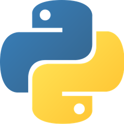
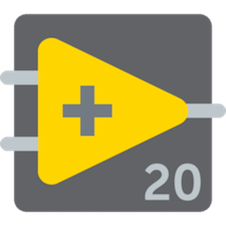
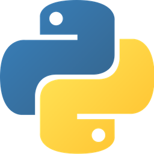
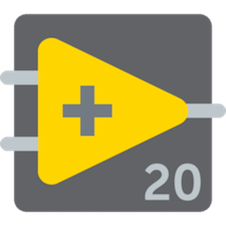
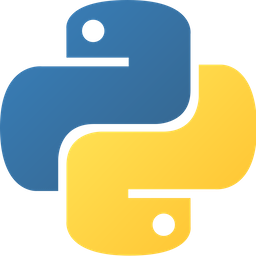
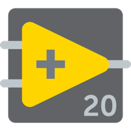

Programming Languages:
 



Details:
Bit by Bit Coding Camp was created by high school 2020 senior Katie Anders. Katie wanted to reach out to students and introduce them to Computer Science. Quite often, in the STEM field, Computer Science
is deemed less important than Science, Engineering, and Mathematics. Through this camp, Katie hopes to introduce students to the Computer Science field and all it has to offer. Not only that but, in order to reach
and introduce as many students as possible, the camp is completely free.
Programming Languages:

